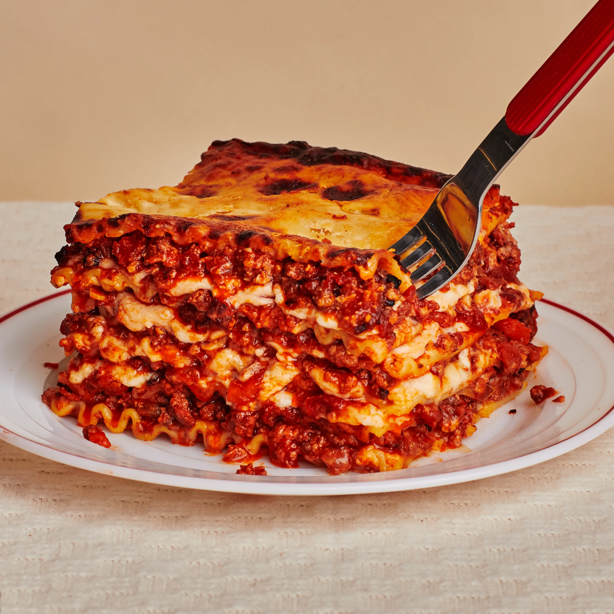

There's nothing quite like pulling a casserole out of the oven and seeing its top bubbly hot with a rich layer of cheese. If you can't get enough flavorful and gooey cheese in your everyday casserole dishes, opt for one of our 15 cheesiest casserole recipes. From Tater Tot and enchilada casseroles to pasta bakes and rice, each meal is sure to be decadently cheesy. And if these still aren't enough cheese for you, well, just add more.